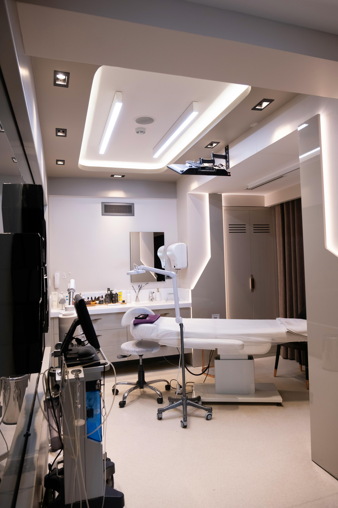

Visi & Misi Kami
Medic+ didirikan dengan misi untuk menjembatani kesenjangan antara pasien dan tenaga medis ahli melalui inovasi teknologi digital yang ramah pengguna.
Kami percaya bahwa kesehatan adalah hak setiap individu, dan akses menuju layanan kesehatan terbaik haruslah mudah, transparan, dan terjangkau bagi siapa saja.
